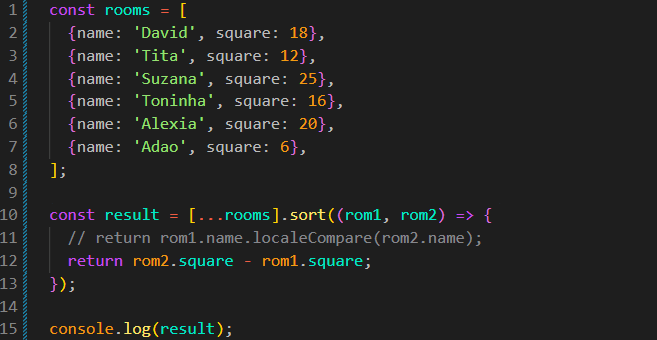

Sort
Intro
Agora iremos aprender sobre o uso do método sort com callback.
Agora iremos aprender sobre o uso do método sort com callback.
JS:

Iremos iniciar nosso código criando um array com múltiplos objetos, ficando da seguinte forma:
const rooms = [
{name: 'David', square: 18},
{name: 'Tita', square: 12},
{name: 'Suzana', square: 25},
{name: 'Toninha', square: 16},
{name: 'Alexia', square: 20},
{name: 'Adao', square: 6},
];
Podemos observar que cada cômodo possui um nome e uma área, representada pela propriedade square.
Podemos, por exemplo, querer ordenar esses objetos pelo name (nome).
Quando queremos ordenar um array, podemos utilizar o método sort().
Porém, se fizermos apenas:
rooms.sort();
O resultado não será o que esperamos. Isso acontece porque, por padrão, o método sort() converte os elementos para strings e faz a comparação entre elas.
Quando um objeto é convertido para uma string de forma padrão, seu resultado é [object Object]. Como todos os objetos do nosso array acabam sendo representados dessa mesma forma, não conseguimos ordenar os objetos pelo name ou pelo square dessa maneira.
Para resolver esse problema, podemos passar uma callback para o sort(). Dessa forma, podemos definir como os elementos deverão ser comparados.
A callback recebe dois elementos do array para serem comparados. Podemos representá-los, por exemplo, como rom1 e rom2.
Primeiro: um elemento do array.
Segundo: outro elemento do array que será comparado com o primeiro.
Ficando da seguinte forma:
const result = rooms.sort((rom1, rom2) => {
return rom1.name > rom2.name ? 1 : -1;
});
O valor retornado pela callback informa ao sort() como os dois elementos devem ser posicionados.
De forma simplificada:
Valor negativo: rom1 vem antes de rom2.
Valor positivo: rom1 vem depois de rom2.
Zero: os dois elementos são considerados equivalentes para aquela comparação.
Importante: comparações simples entre strings utilizam os valores dos caracteres. Por isso, dependendo dos caracteres utilizados, podemos não obter exatamente a ordenação esperada.
Para comparar strings de maneira mais apropriada, podemos utilizar localeCompare(), ficando da seguinte forma:
const result = rooms.sort((rom1, rom2) => {
return rom1.name.localeCompare(rom2.name);
});
O método localeCompare() compara duas strings e retorna um valor negativo, positivo ou zero, exatamente no formato que o sort() precisa para decidir a ordem.
Para inverter a ordem, podemos colocar um sinal de - antes do resultado:
const result = rooms.sort((rom1, rom2) => {
return -rom1.name.localeCompare(rom2.name);
});
Dessa forma, uma comparação que indicaria que rom1 deveria vir antes passa a indicar o contrário, invertendo a ordenação.
Basicamente, faremos a mesma coisa que fizemos anteriormente. Porém, dessa vez iremos selecionar a propriedade square.
const result = rooms.sort((rom1, rom2) => {
return rom1.square - rom2.square;
});
Aqui utilizamos uma subtração para descobrir qual número deve ficar primeiro.
Se rom1.square for menor que rom2.square, o resultado será negativo e rom1 ficará antes.
Se quisermos inverter a ordem, podemos inverter os valores da subtração:
const result = rooms.sort((rom1, rom2) => {
return -;
});
Assim, os maiores valores de square ficarão primeiro.
Importante: o método sort() modifica o array original.
Se desejarmos que nosso array original não seja alterado, podemos criar uma cópia antes de utilizar o sort().
const result = [...rooms].sort((rom1, rom2) => {
return rom2.square - rom1.square;
});
Quando utilizamos [...rooms], estamos utilizando a spread syntax. Ela cria um novo array e copia para ele os elementos de rooms.
Depois disso, o sort() é aplicado ao novo array, deixando o array original rooms sem a alteração da ordenação.
Importante: isso é uma cópia do array, mas não uma cópia profunda dos objetos. Os objetos dentro dos dois arrays continuam sendo as mesmas referências.
Podemos pensar no sort() como alguém que precisa organizar duas pessoas por vez e pergunta:
"Quem deve ficar primeiro: rom1 ou rom2?"
A callback responde através de um número:
Negativo: rom1 vem primeiro.
Positivo: rom2 vem primeiro.
Zero: não há diferença na comparação.
Por isso, essas duas formas são muito comuns:
// Crescente rom1.square - rom2.square // Decrescente rom2.square - rom1.square
Para strings, podemos utilizar:
// A → Z rom1.name.localeCompare(rom2.name) // Z → A * rom1.name.localeCompare(rom2.name)
podemos observar que o nosso localeCompare ficará no lugar do >, ou seja, podemos considerá-lo, a grosso modo, como um operador, apenas para ficar mais claro o local em que ele se encaixa na sintaxe. Porém, tecnicamente, localeCompare() é um método que retorna um valor usado pelo sort() para definir a ordem dos elementos.
Se quisermos fazer a ordenação inversa, podemos apenas adicionar um sinal de - antes do resultado, ficando da seguinte forma: